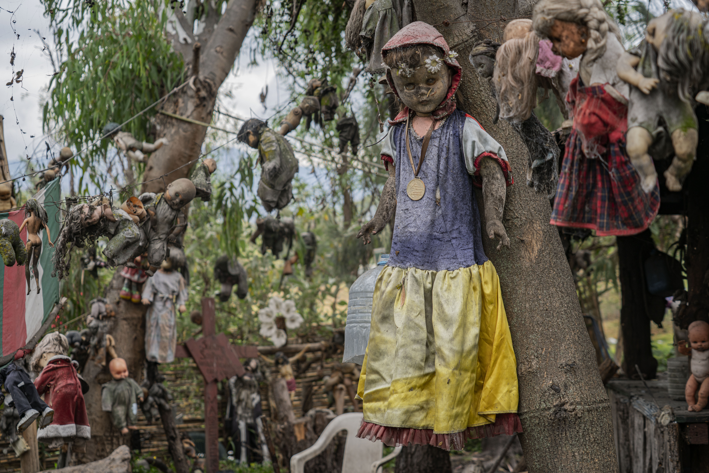
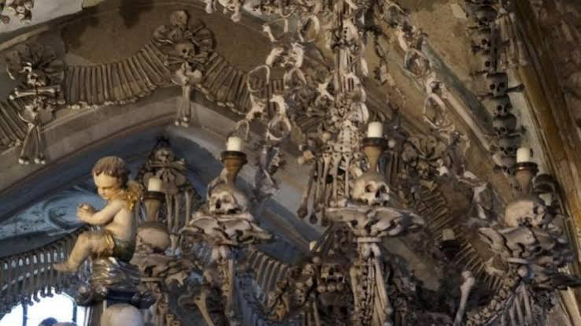

Entre las aguas de Venecia se esconde una isla abandonada cuyo pasado está marcado por la enfermedad, el sufrimiento y la muerte. Se llama Poveglia, aunque muchos la conocen como la isla de los fantasmas. A simple vista parece un lugar devorado por la naturaleza, con edificios en ruinas y pasillos cubiertos de vegetación. Sin embargo, su historia esconde algunos de los episodios más oscuros de Italia.
Durante el siglo XIV, cuando la peste negra arrasó Europa, Poveglia fue utilizada como lugar de aislamiento para los enfermos. Miles de personas fueron trasladadas allí para evitar que la epidemia se extendiera por Venecia. Muchos murieron sin volver a ver a sus familias. La isla también terminó convirtiéndose en un lugar de enterramiento masivo y, según los relatos populares, alrededor de 160.000 víctimas habrían sido quemadas allí.
Pero el horror no terminó con las epidemias. Durante el siglo XX, algunos edificios de la isla fueron utilizados como hospital psiquiátrico. Con el tiempo surgieron relatos sobre supuestos experimentos médicos, lobotomías y pacientes sometidos a prácticas crueles. Una de las leyendas más conocidas habla de un médico que terminó perdiendo la razón y se arrojó desde el campanario del hospital. Se dice que una misteriosa niebla lo envolvió antes de morir. Aunque no existen pruebas que confirmen esta historia, su leyenda sigue alimentando el misterio de Poveglia.
En 1968, las instalaciones sanitarias cerraron definitivamente y la isla quedó abandonada. Décadas después, los exploradores británicos Matt Nadin y Andy Thompson recorrieron sus edificios en ruinas. Durante su visita encontraron antiguas camas, habitaciones deterioradas y pasillos completamente desiertos. Uno de los momentos más inquietantes ocurrió cuando aseguraron escuchar una campana en medio del silencio. Un sonido difícil de olvidar en un lugar donde ya no vive nadie.
Actualmente, Poveglia es considerada uno de los lugares más embrujados del mundo. Hay quienes aseguran haber escuchado voces, pasos y sonidos inexplicables entre sus ruinas. Ninguno de estos fenómenos ha sido demostrado, pero su terrible pasado ha convertido la isla en un escenario perfecto para las historias de terror. Hoy, la vegetación continúa devorando sus edificios y el silencio reina sobre sus antiguos caminos. Quizá los fantasmas solo existan en las leyendas. Pero después de todo lo que ocurrió en Poveglia, hay una pregunta que resulta difícil ignorar: ¿y si algunos lugares nunca consiguen desprenderse de su pasado?

A los pies del monte Fuji, en Japón, se encuentra Aokigahara, un bosque conocido como el mar de árboles. A simple vista parece un lugar hermoso, cubierto de vegetación, musgo y árboles centenarios. Sin embargo, su ambiente esconde una historia que ha despertado la curiosidad y el temor de miles de personas.
Una de las características más sorprendentes de este bosque es su extraño silencio. La vegetación es tan densa que apenas deja pasar la luz y amortigua los sonidos del exterior. Algunos visitantes describen la sensación de estar completamente aislados del mundo. Además, el terreno está lleno de rocas volcánicas y raíces que hacen que el paisaje resulte especialmente difícil de reconocer.
En Japón existen antiguas creencias sobre los yūrei, espíritus que, según el folclore japonés, permanecen vinculados al mundo de los vivos. Con el tiempo, estas leyendas se relacionaron con Aokigahara. Algunas historias cuentan que los visitantes han escuchado pasos detrás de ellos o susurros entre los árboles, aunque al darse la vuelta no encuentran a nadie. No existen pruebas de fenómenos sobrenaturales, pero estas historias han contribuido a crear su misteriosa reputación.
Cuenta una leyenda moderna que un fotógrafo visitó el bosque durante una mañana de otoño. Mientras fotografiaba los árboles cubiertos de niebla, tomó una imagen de un sendero aparentemente vacío. Al revisar la fotografía, descubrió una silueta al fondo, entre los árboles. Pensó que sería otro visitante, pero en las siguientes imágenes aquella figura parecía acercarse. En la última fotografía, el sendero estaba completamente vacío. El fotógrafo aseguró que nunca había visto a nadie durante aquella visita. Nunca consiguió explicar lo que había capturado su cámara.

Bajo un antiguo convento de Palermo, en Italia, se esconde uno de los lugares más inquietantes del mundo: las Catacumbas de los Capuchinos, un cementerio subterráneo que alberga alrededor de 2.000 cuerpos momificados y numerosos restos humanos. Lo más perturbador es que muchos de ellos no están enterrados en tumbas, sino colocados de pie o tumbados en nichos, vestidos con sus antiguas ropas, como si todavía estuvieran esperando a alguien. La historia comenzó a finales del siglo XVI, cuando los monjes capuchinos necesitaron ampliar su cementerio. Al trasladar algunos cuerpos, descubrieron que 45 de ellos se habían conservado de forma natural durante años. Sorprendidos por aquel fenómeno, decidieron exponerlos en las galerías subterráneas. Con el tiempo, otras familias comenzaron a solicitar que sus seres queridos también fueran momificados y colocados allí. Así, el cementerio terminó convirtiéndose en un lugar donde las personas parecían permanecer atrapadas entre la vida y la muerte. Catacombe Frati Cappuccini+1 Sin embargo, uno de los casos más sorprendentes es el de Rosalia Lombardo, una niña que falleció en 1920 con apenas dos años. Su padre, devastado por su pérdida, encargó su conservación al especialista Alfredo Salafia. Gracias a una técnica de embalsamamiento extraordinaria, su cuerpo se conservó de una manera tan impresionante que parece estar dormida dentro de su ataúd de cristal. Por eso recibió el sobrenombre de la Bella Durmiente de Palermo.

En los canales de Xochimilco, en México, existe un lugar que parece sacado de una auténtica película de terror: la Isla de las Muñecas. Sus árboles están cubiertos de cientos de muñecas antiguas, muchas de ellas deterioradas por el paso del tiempo, con rostros agrietados, ojos vacíos y extremidades desgastadas. Pero detrás de este inquietante paisaje se esconde una historia todavía más perturbadora.
Todo comenzó con un hombre llamado Julián Santana, que vivía prácticamente aislado en aquella isla. Según cuenta la leyenda, un día encontró el cuerpo de una niña que había fallecido en los canales cercanos. Poco después, encontró una muñeca flotando en el agua y decidió colgarla de un árbol como homenaje. Sin embargo, con el paso del tiempo, Julián comenzó a asegurar que el espíritu de la niña seguía presente en la isla. Convencido de que aquellas muñecas podían protegerlo, empezó a recogerlas y colgarlas por todas partes. Así, poco a poco, la isla se transformó en un escenario lleno de cientos de muñecas que parecían observar a cualquiera que se acercara.
Lo más inquietante llegó décadas después, cuando Julián fue encontrado sin vida en los mismos canales donde, según la leyenda, había aparecido la niña. Desde entonces, comenzaron a circular historias sobre muñecas cuyos ojos parecían seguir a los visitantes, cabezas que cambiaban misteriosamente de posición y extraños sonidos entre los árboles.
Hoy, la isla es uno de los lugares más misteriosos de México. Aunque muchas de estas historias pertenecen al folclore popular y no existen pruebas de fenómenos sobrenaturales, su aspecto resulta difícil de olvidar. Imagina navegar por un canal silencioso y llegar a una isla donde cientos de muñecas cuelgan de los árboles, balanceándose lentamente con el viento. Sus rostros parecen observarte y, por un instante, tienes la sensación de que ninguna está realmente sola.

En una pequeña localidad de la República Checa llamada Kutná Hora se encuentra uno de los lugares más escalofriantes de Europa: el Osario de Sedlec, una capilla subterránea decorada con los huesos de aproximadamente 40.000 personas. Lo más perturbador es que sus paredes, lámparas y adornos no están hechos de piedra ni de madera, sino de auténticos restos humanos.
La historia comenzó en la Edad Media, cuando un abad del monasterio regresó de Jerusalén con un poco de tierra procedente de Tierra Santa y la esparció por el cementerio de Sedlec. Desde entonces, aquel lugar adquirió una enorme popularidad, ya que muchas personas deseaban ser enterradas allí. Con el paso de los años, las epidemias, las guerras y las hambrunas provocaron que miles de personas fueran sepultadas en aquel cementerio. Como el espacio comenzó a quedarse pequeño, los monjes tuvieron que retirar antiguos restos humanos y almacenarlos en una capilla subterránea.
Sin embargo, lo que convirtió este lugar en algo verdaderamente inquietante ocurrió siglos después. En 1870, un artesano llamado František Rint recibió el encargo de ordenar los huesos acumulados en la capilla. En lugar de limitarse a almacenarlos, creó auténticas obras decorativas utilizando restos humanos: enormes pirámides de cráneos, guirnaldas de huesos, escudos familiares y una impresionante lámpara construida con diferentes huesos del cuerpo humano.
Hoy, el Osario de Sedlec sigue abierto al público y recibe visitantes de todo el mundo. Al entrar, uno se encuentra rodeado de miles de restos humanos cuidadosamente colocados, en un ambiente silencioso que recuerda constantemente la fragilidad de la vida. Lo más inquietante es pensar que cada hueso perteneció a una persona que tuvo una familia, una historia y una vida propia.